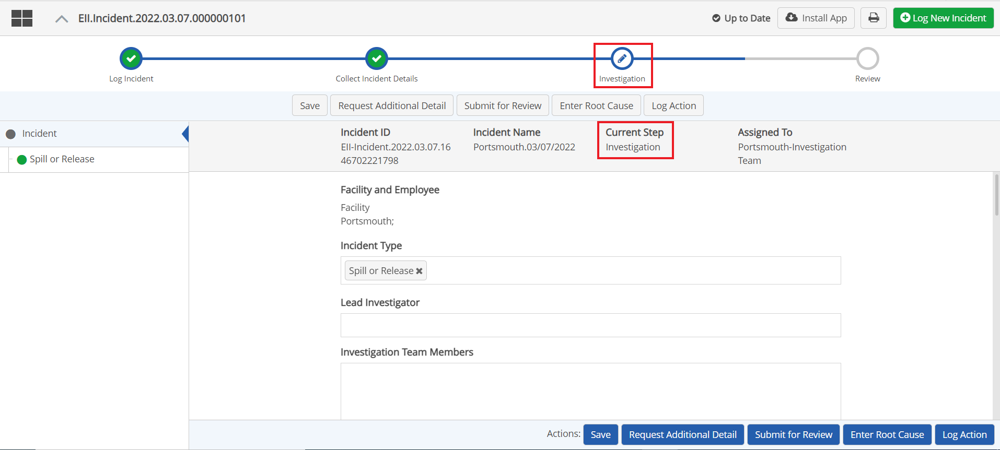

After an incident has been created and details provide, it may be sent to an investigation team for further investigation. The Investigation is an optional step of the incident workflow.
To complete the investigation:
Open the main incident form.
The Current Step (Investigation) is indicated at the top of the form and in the Process Bar, if enabled.
Complete the fields provided for the investigation.

Other actions you may take (depending on the action buttons available) include: